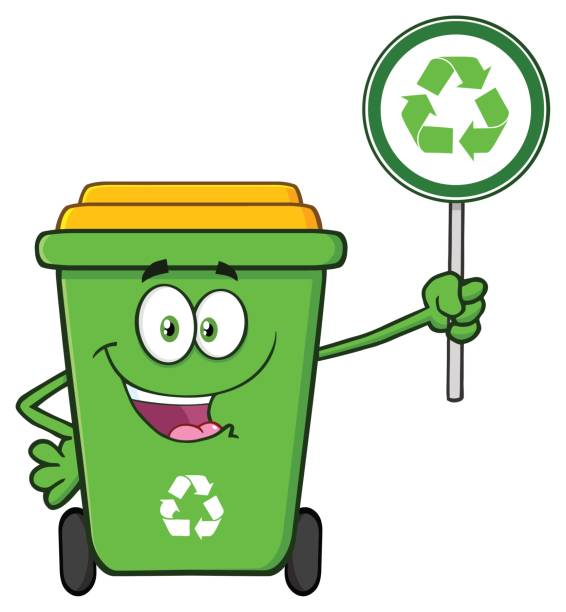

How You Can Help!

Now you know about pollution, you can learn how to save the Earth from pollution! The main way you can help is recycling plastic, cans, and rubbish. Recycling means taking old things we don’t need anymore and turning them into something new! Instead of throwing everything in the bin, we can save paper, plastic, glass, and metal so they can be used again. This helps keep the Earth clean and happy.
How to Recycle!
-
Learn the Recycling Symbol ♻️
This means something can be recycled!
-
Sort Your Rubbish 🗑ï¸
Put paper, plastic, metal, and glass in the recycling bin – not the rubbish bin
-
Rinse Before You Recycle 🚿
Wash out bottles, cans, and containers so they’re clean before you toss them in
-
Flatten Boxes 📦
If you have cardboard boxes, flatten them to save space in the bin.
-
Ask Before Recycling 👩‍🏫
If you're not sure something can be recycled, ask a grown-up or check the label.
-
Reuse When You Can ğŸ¨
Use both sides of paper, turn old jars into pencil holders, or make crafts from boxes!
-
Reduce Plastic Use 🥤
You can use a metal water bottle instead of a plastic water bottle!
-
Have Fun Recycling! 🟡🔴🟢
Colour-code bins, make crafts, or turn it into a game!
Use this Song to Remember the 3 R's!
Reduce, Reuse, Recycle!
Quiz
The answers to these questions are on the bottom of the 'References' page.
- Should you use a metal drink bottle or plastic drink bottle?
- What are the three R's?